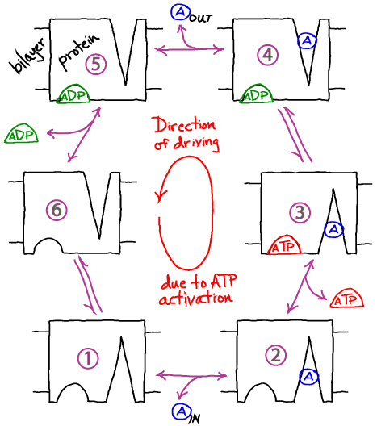
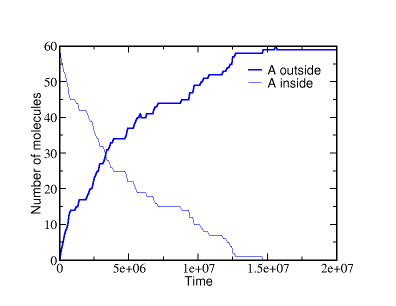
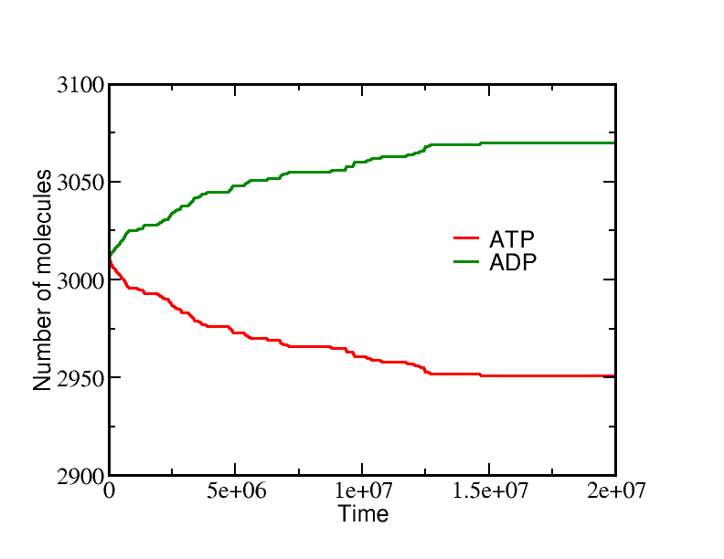
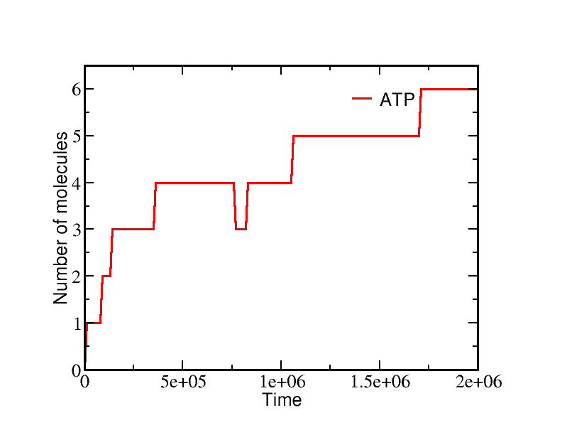
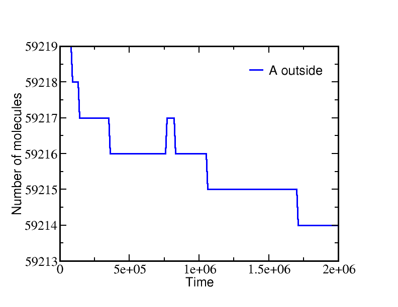

$
\newcommand{\conc}[1]{[\mathrm{#1}]}
\newcommand{\conceq}[1]{[\mathrm{#1}]^{\mathrm{eq}}}
\newcommand{\kcat}{k_{\mathrm{cat}}}
\newcommand{\kdt}{k_{\mathrm{dt}}}
\newcommand{\kdtsol}{k^{\mathrm{sol}}_{\mathrm{dt}}}
\newcommand{\kkeq}{K^{\mathrm{eq}}}
\newcommand{\kmmon}{\kon^{\mathrm{ES}}}
\newcommand{\kmmoff}{\koff^{\mathrm{ES}}}
\newcommand{\kconf}{k_{\mathrm{conf}}}
\newcommand{\koff}{k_{\mathrm{off}}}
\newcommand{\kon}{k_{\mathrm{on}}}
\newcommand{\ktd}{k_{\mathrm{td}}}
\newcommand{\ktdsol}{k^{\mathrm{sol}}_{\mathrm{td}}}
\newcommand{\ss}{\mathrm{SS}}
$
Active transport driven by ATP hydrolysis
Free energy stored in the activated carrier ATP can be used to drive the transport of an ion or small molecule against a gradient - i.e., transport from a region of low to high concentration.
- Membrane-embedded transporter proteins can function as machines because binding and catalytic events are coupled to conformational changes.
- The cycle below is a simplified, schematic model of a transporter
whose ATP hydrolysis step is coupled to "eversion" - transition between inward-facing and outward-facing conformations.
- The alpha helices in membrane proteins achieve eversion in roughly the same manner as you might re-adjust the orientations of a group of irregular pens and pencils held in your hand.

Basics of the Cycle
- This cycle will pump molecule A from inside to outside a cell or compartment in typical conditions (relatively high ATP concentration).
- Like all cycles, this one can be reversed with sufficiently large [A] outside and
sufficiently small [ATP]. Thus, free energy stored in the gradient of A
can be used to synthesize ATP: see below.
- As in the case of gradient-driven transport, the pump itself is actually a passive element or catalyst for the cycle.
The free energy is fully supplied by ATP.
- Note that the model as shown is a simplified version that omits some possible
states and connections among states - e.g., ATP cannot bind the empty receptor in our model.
- Additional states and connections could reduce the efficiency of pumping.
See discussion in Hill's book.
- The presence of additional/states connections would have to be verified on a system-by-system basis.
Understanding how the cycle is driven
- A simple but powerful qualitative analysis starts by considering the condition of equilibrium.
Equilibrium describes a (hypothetical) very large set or ensemble of identical systems of which - on average - an equal number are executing the forward and reverse of every process.
Thus, for example, between steps 2 and 3, if there are $N_{23}$ systems in which ATP binds every second, there is an equal number ($N_{32} = N_{23}$) for which ATP unbinds.
- In the perfectly balanced state of equilibrium, there will be equal numbers of systems performing full clockwise and full counter-clockwise cycles per unit time.
Thus, although individual cycles may pump A or synthesize ATP, there is no net pumping or synthesis/hydrolysis of ATP.
- Because the balance of equilibrium is so perfect, however, it can be disturbed at almost any point in the cycle.
Most obviously, adding an excess of ATP will cause more 2-to-3 transitions, which will cause 3-to-4 transitions and so on, leading to counter-clockwise cycling.
It is the binding process that provides directionality.
Binding events can be considered the "handles" used to drive a cycle in a given direction.
- Importantly, the cycle can also be driven by imbalancing the detailed equilibrium at any point in the cycle:
- Excess A added inside will also drive the cycle counter-clockwise.
- Excess A added outside will drive the cycle clockwise.
- Excess ADP will also drive the cycle clockwise.
A quantitative model: Simulation and analysis
- We will employ a chemical-kinetics model, which is formulated solely in terms of state populations and rate constants for transitions among states, assumed to obey mass-action behavior.
- To keep the model simple, we will make the following assumptions:
- We assume ATP hydrolysis to ADP is a unimolecular event -- i.e., no phosphate (Pi) is released. This does not affect the key conclusions.
- $\kon$ will be the on-rate (see Notation) for both A and nucleotide binding -- for transitions from state 1 to 2, from 2 to 3, from 6 to 5, and from 5 to 4.
- $\koff$ will be the off-rate for all unbinding of A or nucleotide (ATP, ADP) -- reversals of the transitions noted above.
- $\kconf$ will be the rate for conformational transitions in both directions in the apo transporter (no A or nucleotide) -- transitions between states 1 and 6.
- The coupled process of conformational change and ATP conversion to ADP will be governed by the rates $\ktd$ and $\kdt$ for the processes 3 to 4 and 4 to 3, respectively.
- We will assume that the outside and inside volumes are the same -- so that the numbers of A, ATP, and ADP molecules tell us the concentrations in a simple way.
- The model is now fully specified. For example, the differential equation governing the population of state 1 (denoted [1]) is gievn by
\begin{equation*}
\frac{ d \conc{1} }{ dt } =
- \conc{1} \conc{A}_{\mathrm{in}} \, \kon - \conc{1} \, \kconf
+ \conc{2} \, \koff + \conc{6} \, \kconf
\end{equation*}
- In words, the equation means that the population of the unbound state 1 decreases due to binding of A with rate $\kon$ and due to conformational transitions to state 6 with rate $\kconf$; it increases due to unbinding from state 2 with rate $\koff$ and due to conformational transitions from state 6 with rate $\kconf$.
Simulating the model
If we start a simulation with all A molecules on the inside and equal numbers of ATP and ADP (which is far from equilibrium), the system equilibrates to a state with essentially all the A molecules pumped outside.
A molecules are pumped because the initial condition of equal ATP and ADP concentrations is far from equilibrium: ADP is greatly favored and the system moves toward increased ADP concentration even at the (lesser) cost of pushing A beyond its apparent equilibrium of equal inside and outside concentrations.
The data below show the behavior due to a single transporter.


On the other hand, if we start from a very different non-equilibrium condition where no ATP is present and all the A is outside, then ATP will be sythesized (provided there is a sufficiently large amount of A present).
The data below show the system evolution when multiple transporters are present.


These simulations were performed using BioNetGen, a rule-based platform for kinetic modeling.
The brief source code for the model (a .bngl file) can be downloaded by right-clicking here.
Analyzing the model
Although molecular bio-machines tend to operate out of equilibrium, an equilibrium analysis is the simplest and clearest reference point from which to understand their behavior.
In equilibrium, every process (i.e., arrows in the model) will be in balance with its reverse process.
In terms of the simple mass-action kinetics we are employing (see above for rates), this means
\begin{equation}
\conceq{1} \, \conceq{A}_{\mathrm{in}} \, \kon
= \conceq{2} \, \koff
\end{equation}
\begin{equation}
\conceq{2} \, \conceq{ATP} \, \kon
= \conceq{3} \, \koff
\end{equation}
\begin{equation}
\conceq{3} \, \ktd
= \conceq{4} \, \kdt
\end{equation}
and so on.
Solving the full set of equations (by going around the cycle and eliminating one of the numbered-state concentrations at a time) yields the result
\begin{equation}
\label{equil}
\frac{ \conceq{A}_{\mathrm{out}} }{ \conceq{A}_{\mathrm{in}} }
= \frac{ \conceq{ATP} }{ \conceq{ADP} } \frac{ \ktd }{ \kdt }
\end{equation}
Despite its simple appearance, this is actually a constrained equilibrium, as we will see below.
We need to carefully determine the ratio $ \ktd / \kdt $.
We can do this by considering any equilibrium situation because the ratio is not a property of the various rates involved, but rather of the overall "stoichiometry" of the machine (i.e., of the fact that one ATP is required to pump one A molecule).
We can imagine that our transporter is present in a membrane where there is also a simple channel that allows A to flow in or out without impediment.
In this case, A must equilibrate to equal inside and outside concentrations.
But also, ATP and ADP will be unconstrained and hence will relax to their "natural" equilibrium
-- i.e., the equilibrium they would reach in solution if they were not coupled to any other process.
This equilibrium is governed by the ratio of solution ("sol") rates:
\begin{equation}
\label{atpadp}
\frac{ \conceq{ATP} }{ \conceq{ADP} } = \frac{ \kdtsol }{ \ktdsol }
\equiv \kkeq
\end{equation}
which is the same as the equilibrium constant by definition.
To finish our analysis, we substitute \eqref{atpadp} into the full-system equilibrium condition \eqref{equil} for the special case $\conceq{A}_{\mathrm{out}} / \conceq{A}_{\mathrm{in}} = 1$, finding
\begin{equation}
\frac{ \conceq{A}_{\mathrm{out}} }{ \conceq{A}_{\mathrm{in}} }
= 1 = \frac{ \kdtsol }{ \ktdsol } \frac{ \ktd }{ \kdt }
\end{equation}
We thus conclude
\begin{equation}
\label{tdrates}
\frac{ \ktd }{ \kdt } = \frac{ \ktdsol }{ \kdtsol } \; ,
\end{equation}
which is a result for the particular choices we made for rate constants.
Had we chosen different rates for the various processes, a different relation would have been found in terms of the various rates.
Note that \eqref{tdrates} does not say that the rates in and out of solution are the same: it only says their ratio is the same.
A Constrained Equilibrium
Let us re-write the equilibrium condition \eqref{equil} using the constraint \eqref{tdrates}:
\begin{equation}
\label{eqfinal}
\frac{ \conceq{A}_{\mathrm{out}} }{ \conceq{A}_{\mathrm{in}} }
= \frac{ \conceq{ATP} }{ \conceq{ADP} } \frac{ \ktdsol }{ \kdtsol }
\end{equation}
This is actually a constrained equilibrium, assuming that the only way A is transported -- and the only way ATP and ADP interconvert -- is through our transporter.
Specifically, the concentrations of A generally will not reach their "natural" equilibrium (equal inside and outside concentrations) for arbitrary initial conditions of ATP and ADP.
This point is illustrated in the simulation examples above.
The equilibrium is constrained by the fact that one ATP is converted to ADP for each A pumped from inside to outside (or the reverse).
Furthermore, as you can show in an excercise, the constrained equilibrium \eqref{eqfinal} does not depend on our simple rate choices.
The same result holds for any rate choices in our cycle which allow detailed balance to be satisfied in equilibrium.
Another exercise:
Write an equation for the equilibrium values of all species based on an arbitrary initial condition using a single variable.
Ignore molecules that might remain in the transporter.
[Hint: Consider the consequences for all species of a single A molecule transported by this model.]